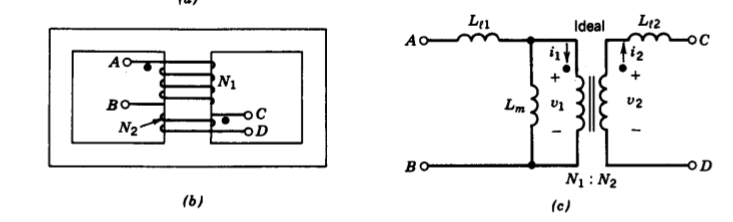
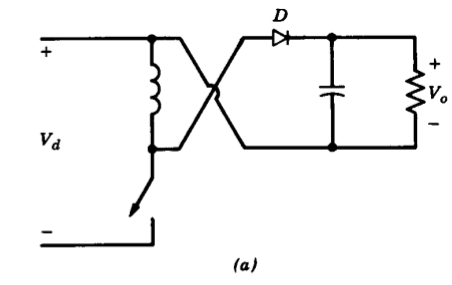
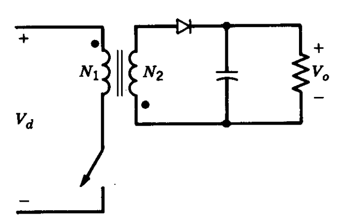
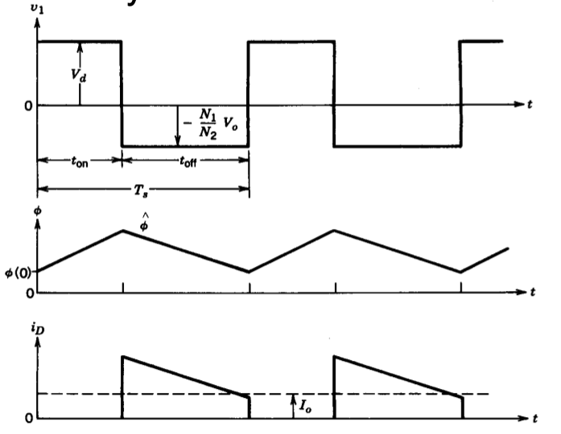
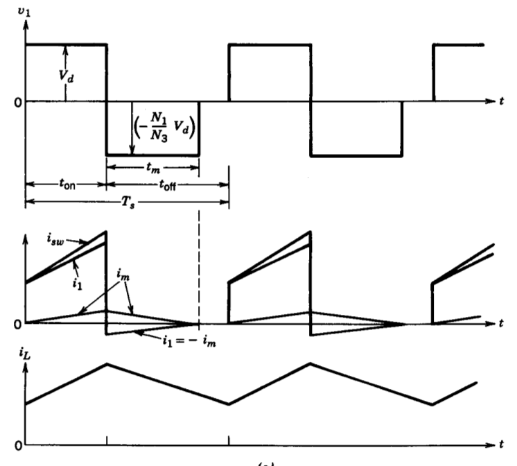
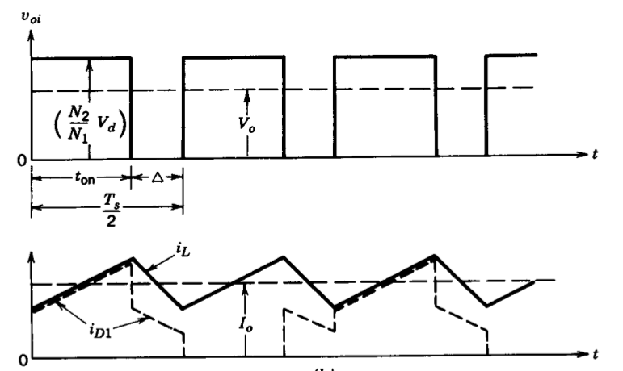

class: center, middle # EE-464 STATIC POWER CONVERSION-II # Switching Power Supplies ## Ozan Keysan ## [keysan.me](http://keysan.me) ### Office: C-113 <span class="meta">•</span> Tel: 210 7586 --- # Regulated Power Supplies -- - ## Regulated Output Voltage -- - ## Electric Isolation -- - ## Minimum size, weight -- - ## Minimum cost -- - ## Maximum efficiency --- # Linear Regulators -- <img src="https://c.76.my/Malaysia/lm7805-voltage-regulator-arelectronics-1710-24-F582919_1.jpg" alt="Drawing" style="width: 500px;"/> --- # Linear Power Supplies -- <img src="./images/ee464/linear_power_supply.png" alt="Drawing" style="width: 700px;"> --- # Linear Power Supplies -- - ## Low frequency transformer: large and heavy -- - ## BJT operates in linear region: dissipates heat -- - ## Efficiency is around 30-60% -- - ## Advantage: -- Minimum EMI Problems --- # Switching DC Power Supply -- <img src="./images/ee464/smps.png" alt="Drawing" style="width: 800px;"> --- # Switching DC Power Supply -- ## Multiple Output Case <img src="./images/ee464/smps_multiple.png" alt="Drawing" style="width: 600px;"> --- # Case Study: -- ## [Apple Charger Teardown](http://www.righto.com/2015/11/macbook-charger-teardown-surprising.html) <img src="http://static.righto.com/images/magsafe/inside-w600.jpg" alt="Drawing" style="width: 600px;"> --- ## [Apple Charger Teardown](http://www.righto.com/2015/11/macbook-charger-teardown-surprising.html) <img src="http://static.righto.com/images/magsafe/components1-w750.png" alt="Drawing" style="width:600px;"> --- # Transformer Analysis --  --- # Flyback Converter -- ## Evolution <img src="./images/ee464/flyback1.png" alt="Drawing" style="width: 700px;"> ## Start from the buck-boost converter --- # Flyback Converter ## Evolution <img src="./images/ee464/flyback2.png" alt="Drawing" style="width: 700px;"> ## Wound the inductor with two parallel wires --- # Flyback Converter ## Evolution <img src="./images/ee464/flyback3.png" alt="Drawing" style="width: 700px;"> ## Isolate inductor wires (isolated converter) --- # Flyback Converter ## Evolution <img src="./images/ee464/flyback4.png" alt="Drawing" style="width: 600px;"> ## Modify turns ratio and get positive output --- # Flyback Converter  ## Derived from buck-boost converter --- # Flyback Converter with Isolation with Isolation  --- # Flyback Converter with Isolation ## Can you plot the operating modes? --- # Flyback Converter with Isolation ## Switch ON <img src="./images/ee464/flyback_on.png" alt="Drawing" style="width: 600px;"> --- # Flyback Converter with Isolation ## Switch OFF <img src="./images/ee464/flyback_off.png" alt="Drawing" style="width: 600px;"> --- # [Flyback Converter](https://www.plexim.com/academy/power-electronics/flyback-conv) with Isolation  --- # Flyback Converter with Isolation -- ## Conversion ratio can be calculated in three diffrent ways: -- - ### Magnetic Circuit: Transformer Flux -- - ### Steady state current -- - ### Graphically: Voltage-seconds area of the inductor -- # \\(\dfrac{V_o}{V_d} = \dfrac{D}{(1-D)} \dfrac{N_2}{N_1} \\) --- ## Switch Selection -- ### Peak Switch Current -- ### \\(\hat{I}_{sw}= \dfrac{1}{(1-D)} \dfrac{N_2}{N_1} I\_o + \dfrac{N\_1}{N\_2} \dfrac{(1-D)T\_s}{2L\_m}V\_o\\) -- ### Peak Switch Voltage -- ### \\( \hat{V}_{sw} = V\_d + \dfrac{N_1}{N_2}V\_o\\) -- \\(=\dfrac{V\_d}{(1-D)}\\) --- # Reading List - ## [The Flyback Converter](http://ecee.colorado.edu/ecen4517/materials/flyback.pdf) - ## [Flyback transformer tutorial: function and design](https://www.eetimes.com/document.asp?doc_id=1273089) - ## [Flyback Converter Video](https://www.youtube.com/watch?v=2B3SmWHeAOc) --- # Flyback Variations -- <img src="./images/ee464/two_transistor_flyback.png" alt="Drawing" style="width: 500px;"> --- # Flyback Variations -- <img src="./images/ee464/parallel_flyback.png" alt="Drawing" style="width: 500px;"> --- # Forward Converter -- ## Derived from the Buck Converter -- <img src="./images/ee464/forward_converter.png" alt="Drawing" style="width: 700px;"> --- # Forward Converter -- ## Can you obtain the output voltage characteristics? -- # Quiz -Q1 -- # Quiz -Q2 ## Choose a duty cycle and turns ratio, to get 12V DC from a 200V DC input. --- # Forward Converter -- ## A buck converter with added turns ratio # \\(\dfrac{V_o}{V_d} =\dfrac{N_2}{N_1} D \\) --- # Forward Converter <img src="./images/ee464/forward_converter.png" alt="Drawing" style="width: 700px;"> ## What happens at the instant switch is off, it the transformer is not ideal? --- # Forward Converter <img src="./images/ee464/forward_converter.png" alt="Drawing" style="width: 700px;"> ## A discharging path for Lm should be added. --- # Pratical Forward Converter <img src="./images/ee464/practical_forward.png" alt="Drawing" style="width: 800px;"> ## A transformer with two-primary windings --- # Pratical Forward Converter <img src="./images/ee464/practical_forward_Lm.png" alt="Drawing" style="width: 800px;"> ## A transformer with two-primary windings --- # Pratical Forward Converter ## Switch is ON ### L is charged by input current ### Same with the ideal case: - ### D1 On - ### D2 Off - ### D3 Off --- # Pratical Forward Converter ## Switch is OFF ### L discharges (feeds the load) -- ### Lm is discharged to the source ### \\(i_1 = - i_m \\) -- ### KCL: \\(N_1 i_1 = N_2 i_2 - N_3 i_3\\) ### For proper operation the transformer should be "reset" before next ON period --- # Pratical Forward Converter  --- # Pratical Forward Converter ### For proper operation the transformer should be "reset" before next ON period ## \\(t\_m < (1-D) T\_s\\) -- ## \\(D\_{max}\\) -- \\(=\dfrac{1}{1+ (N\_3 / N\_1)}\\) --- ### Same with the ideal case: ### D1 On ### D2 Off ### D3 Off --- ### What happens if D is large, and transformer does not reset completely? -- <img src="./images/ee464/forward_saturation.png" alt="Drawing" style="width: 450px;"> #### In the figure Dmax=0.5 ### Saturation, increased core losses, reduced Lm --- # Forward Converter Alternatives -- ## Two-switch forward converter <img src="./images/ee464/forward_two_switch.png" alt="Drawing" style="width: 600px;"> --- # Forward Converter Alternatives ## Two-switch forward converter -- <img src="./images/ee464/forward_two_switch2.jpg" alt="Drawing" style="width: 800px;"> --- ## Two-switch forward converter ## Advantages: -- ## Does not require a snubber circuit -- ## Less voltage stress on MOSFETs -- ## Can supply multiple isolated outputs -- ## Low power losses and noise --- ## Two-switch forward converter ## Disadvantages: -- ## Slightly more expensive -- ## Larger component count --- ## Interleaved forward converter <img src="./images/ee464/interleaved_forward.png" alt="Drawing" style="width: 750px;"> --- # Push-Pull Converter -- <img src="./images/ee464/push_pull.png" alt="Drawing" style="width: 750px;"> ### Uses a center-tapped transformer --- # Push-Pull Converter ## Switch(T1) ON, Switch(T2) OFF ### D1 conducts, D2 reverse-biased -- ### \\(v\_{oi}= \dfrac{N\_2}{N\_1} V\_d \\) -- ### \\(v\_{L}= v\_{oi} - V\_o = \dfrac{N\_2}{N\_1} V\_d - V\_o \\) ### \\(i\_L\\) increases linearly --- # Push-Pull Converter  --- # Push-Pull Converter ## Switches(T1 and T2) OFF ### For a period of \\(\Delta\\) -- ### Both D1 and D2 conducts ### \\(I\_{D1} = I\_{D2} = 0.5 I\_{L} \\) ### \\(v\_{oi}= 0 \\) -- ### Therefore \\(v\_{L}= -V\_o \\) ### Inductor discharges and feeds the load --- # Push-Pull Converter ## Switch(T2) ON, Switch(T1) OFF ### Symmetrical operation with the previous ### \\(v\_{oi}= \dfrac{N\_2}{N\_1} V\_d \\) -- ### \\(v\_{L}= v\_{oi} - V\_o = \dfrac{N\_2}{N\_1} V\_d - V\_o \\) ### \\(i\_L\\) increases linearly --- # Push-Pull Converter ## Repeating waveforms for Ts/2 ## \\(D T\_s + \Delta = \dfrac{T\_s}{2} \\) ## \\(\Delta = \dfrac{(1-2D)}{2}T\_s \\) --- # Push-Pull Converter ## Output voltage characteristics? -- ## Use the inductor voltage -- # \\(\dfrac{V_o}{V_d} =\dfrac{2N_2}{N_1} D \\) ### Twice of the forward converter --- # Push-Pull Converter ### Comparison of Magnetic Flux in the Core <img src="./images/ee464/push_pull_magnetic.png" alt="Drawing" style="width: 700px;"> --- # Extra Materials ## Flyback Converter #### [ECEN4517 Lecture Notes](http://ecee.colorado.edu/ecen4517/materials/flyback.pdf) #### [Flyback Transformer Tutorial](https://www.eetimes.com/document.asp?doc_id=1273089) #### [Optimised Flyback Design](http://www.eenewspower.com/content/step-step-optimised-flyback-design) #### [Switch Mode Power Supply (SMPS) Topologies](http://ww1.microchip.com/downloads/en/AppNotes/01207B.pdf) #### [ECE5797 SMPSs](http://ecee.colorado.edu/~ecen5797/course_material/Ch6slides.pdf) #### [Flyback Converter, Transformer Design](https://coefs.uncc.edu/mnoras/files/2013/03/Transformer-and-Inductor-Design-Handbook_Chapter_13.pdf) #### [Design Guide Flyback Converter](https://www.fairchildsemi.com/application-notes/AN/AN-4137.pdf) #### [Design Guidelines for Flyback Converter](https://www.monolithicpower.com/Portals/0/Documents/Products/Documents/appnotes/AN069_r1.0.pdf) ### [Transformer Design Cookbook](https://www.digikey.com/Web%20Export/Supplier%20Content/Wurth_732/PDF/Wurth_CookbookforTransformerDesign.pdf?redirected=1) --- # Extra Materials ## Forward Converter ### [Forward Converter, Transformer, Inductor Design](https://coefs.uncc.edu/mnoras/files/2013/03/Transformer-and-Inductor-Design-Handbook_Chapter_14.pdf) ### [Forward Converter Design](https://www.mouser.com/pdfdocs/2-10.pdf) ### [Forward Converter Tutorial Video](https://training.ti.com/topology-tutorial-what-forward-converter) --- # Design Exercise -- ## [Forward Converter Design](https://www.mouser.com/pdfdocs/2-10.pdf) ### [ETD 34/17/11](https://product.tdk.com/info/en/documents/data_sheet/etd_34_17_11.pdf) -- ### [Skin Effect Calculator](https://www.allaboutcircuits.com/tools/skin-depth-calculator/) ### [AWG Conductors](https://en.wikipedia.org/wiki/American_wire_gauge) --- ## You can download this presentation from: [keysan.me/ee464](http://keysan.me/ee464)